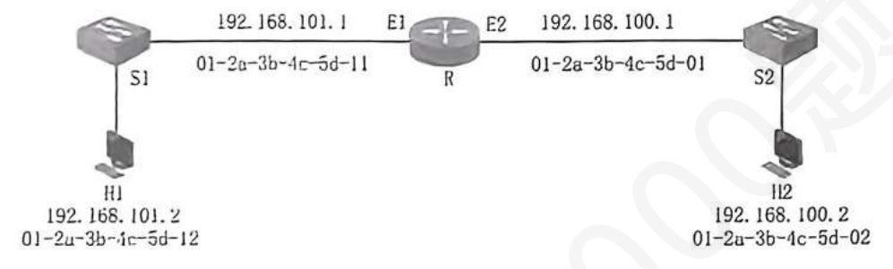
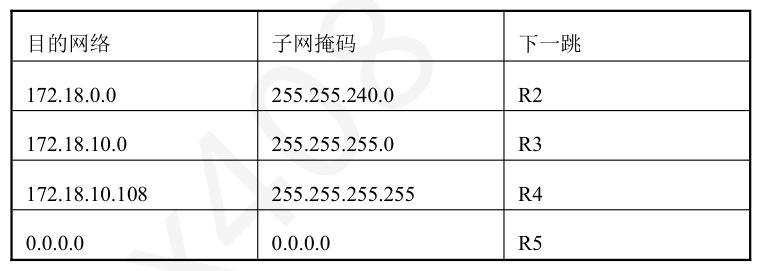
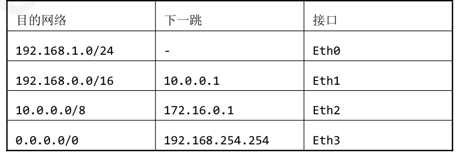

第 91 题
在以下有关IP 路由器的相关描述中，正确的是（ ）。
- A．IP 路由器不涉及拥塞控制功能。
- B．给路由器的接口配置好IP 地址和地址掩码后，路由器会自动得出该接口的直连网络地址。
- C．使用1.1.1.1/32 表示默认路由。
- D．使用0.0.0.0/0 表示特定主机路由。
答案与解析
答案：B
选项A 描述错误。IP 路由器队列长度达到某个值得警惕的数值时，也就是网络出现了某些拥塞征兆时，就主动丢弃到达的IP 数据报来造成发送方的超时重传，进而降低发送方的发送速率，因而有可能减轻网络的拥塞程度，甚至不出现网络拥塞。选项B 描述正确。将IPv4 地址与相应的子网掩码进行逐比特的逻辑与运算，就可得到该IPv4 地址所在子网的网络地址。选项C 描述错误。默认路由用0.0.0.0/0 表示，斜线后面的0 指明网络前缀的长度为0（相应地址掩码为0.0.0.0），按最长前缀匹配原则，默认路由的匹配优先级最低。选项D 描述错误。特定主机路由用某个特定主机的IP 地址/32 表示，斜线后面的32 指明④网络前缀的长度为32 (相应地址掩码为255.255.255.255)，按最长前缀匹配原则，特定主机路由的匹配优先级最高。
第 92 题
一个大型园区网络仅通过交换机互连，近期网络性能急剧下降，用户普遍反映访问内部资源卡顿。网络管理员抓包分析发现，网络中存在大量的DHCP 请求和ARP 请求报文。要从根本上解决此性能问题，最有效的措施是（）。
- A．更换所有交换机为更高转发速率的型号。
- B．在网络中增加集线器以分担流量。
- C．引入路由器对网络进行子网划分。
- D．要求所有用户使用静态IP 地址以减少DHCP 流量。
答案与解析
答案：C
只采用交换机互连，网络性能下降，且网络中存在大量DHCP 请求和ARP 请求报文（均为广播），说明出现了广播风暴。而路由器可以抑制广播风暴，因此应当引入路由器对网络进行子网划分。
第 93 题
下列网络设备中，能够隔离冲突域但不能隔离广播域的设备是（ ）。
- A．集线器
- B．交换机
- C．路由器
- D．中继器
答案与解析
答案：B
在一个冲突域内，如果两台或多台设备同时发送信号，就会产生冲突。交换机工作在数据链路层，它能根据目的MAC 地址，将数据帧仅从特定的端口转发出去，而不是像集线器那样向所有端口广播。因此，交换机的每个端口都构成一个独立的冲突域，它能够有效地隔离冲突域。在一个广播域内，任何一台设备发出的广播帧（目的MAC 地址为FF-FF-FF-FF-FF-FF）都会被域内所有其他设备接收。当二层交换机收到一个广播帧时，它的标准操作就是向除源端口外的所有端口进行泛洪。因此，交换机本身不能隔离广播域，故选择B。集线器和中继器既不能隔离冲突域也不能隔离广播域，路由器既可以隔离冲突域又可以隔离广播域。
第 94 题
下列关于通过路由器实现异构网络互联的叙述中，错误的是（ ）。
- A．路由器利用IP 地址进行寻址，从而屏蔽了底层不同的物理地址。
- B．被互联的各个网络可以有不同的数据链路层协议。
- C．路由器转发前后，IP 数据报首部的TTL 字段值通常会发生变化。
- D．为了统一管理，被路由器互联的所有主机的IP 地址必须属于同一个子网。
答案与解析
答案：D
路由器的根本目的就是为了连接不同的IP 网络（子网）。如果所有主机的IP 地址都属于同一个子网，它们之间可以通过二层交换机直接通信，根本不需要路由器。正是因为存在多个不同的子网，才需要路由器在它们之间根据IP 地址进行路由和转发。
第 95 题
网络互连时，在由路由器进行互连的多个局域网的结构中，要求每个局域网的（ ）
- A．物理层协议可以不同，而数据链路层及数据链路层以上的高层协议必须相同。
- B．物理层、数据链路层协议可以不同，而数据链路层以上的高层协议必须相同。
- C．物理层、数据链路层、网络层协议可以不同，而网络层以上的高层协议必须相同。
- D．物理层、数据链路层、网络层及高层协议都可以不同。
答案与解析
答案：C
路由器是工作在网络层的设备，向网络层以上的层次隐藏下层的具体实现，因此每个局域网的物理层数据链路层和网络层协议可以不同。而路由器不能处理网络层以上的协议数据，因此每个局域网的网络层以上的高层协议必须相同。
第 96 题
主机A 通过无线Wi-Fi 连接到无线路由器R，路由器R 通过有线方式连接到服务器B。当A向B 发送一个IP 数据报时，下列说法正确的是（ ）。
- A．R 接收和发送的帧格式都是802.11 格式。
- B．R 接收和发送的帧格式都是以太网II 格式。
- C．R 接收的是802.11 格式的帧，发送的是以太网II 格式的帧。
- D．R 直接转发收到的802.11 帧，不做任何改变。
答案与解析
答案：C
主机A 通过Wi-Fi 向路由器R 发送数据。此时，IP 数据报被封装在一个802.11格式的帧中。路由器R 从其无线接口接收到这个802.11 帧。R 作为路由器，将802.11 帧的头部和尾部解封装，取出中间的IP 数据报。然后，它根据IP 数据报的目的地址（B 的IP 地址）查找路由表，决定应从其有线以太网接口转发。为了在以太网上传输，R 必须将该IP 数据报封装成一个以太网II 格式的帧。这个新帧的源MAC 地址是R 的有线网口MAC，目的MAC 地址是服务器B 的MAC。
第 97 题
关于路由协议和路由表，下列说法正确的是（ ）。
- A．路由表中的所有条目都必须通过路由协议来学习。
- B．路由器根据路由协议报文的内容直接进行分组转发。
- C．路由协议的主要任务是发现路由并生成路由表。
- D．静态路由不需要路由表，而动态路由需要。
答案与解析
答案：C
路由表的条目来源有多种：通过路由协议动态学习、由管理员手动配置的静态路由、以及与路由器接口直连的直连路由，故A 错误。路由器转发分组的依据是转发表，而不是路由协议报文本身，故B 错误。无论静态路由还是动态路由，最终都需要将路由信息填入路由表中，路由器才能据此进行转发。所谓静态路由，是指路由表中的路由信息是由网络管理员人为设置的，不会因为网络拓扑的变化自行调整，故D 错误。
第 98 题
已按勘误修正
主机H 的IP 为10.0.0.10/24，默认网关为10.0.0.1。当H 向IP 地址为8.8.8.8 的节点发送分组时， H 的数据链路层构建的以太网帧，其目的MAC 地址是（ ）；该分组到达网关路由器后，路由器查找自身路由表并转发，此时路由器执行的操作不包括（）。
- A．10.0.0.1 的MAC地址
- B．10.0.0.1 的MAC 地址；修改源MAC 地址。
- C．10.0.0.1 的MAC 地址；TTL 值减1。
- D．8.8.8.8 的MAC 地址；重新计算IP 首部校验和。
答案与解析
答案：A
当主机H要向IP地址为8.8.8.8的节点发送分组时，会首先对比自己的IP地址和目的IP地址是否位于同一局域网。主机所在网络的网络号为10.0.0.0，而8.8.8.8的前24位与之不匹配，因此主机H会将IP分组发送给默认网关，MAC地址为默认网关的地址，即10.0.0.1的MAC地址。默认网关收到来自主机H的IP分组后，会TTL减1、修改源MAC地址为自己的MAC地址，重新计算IP首部校验和，但是不会修改目的IP地址。注意：源IP地址为私有地址，所以发往公网时，需要修改源地址为公网地址。
勘误：A 选项已按勘误改为“10.0.0.1 的MAC地址”；目的IP地址不变。
勘误：解析已按勘误替换
第 99 题
如下图所示，路由器R 通过E1 接口连接交换机S1、通过E2 接口连接交换机S2。交换机S1和交换机S2 分别连接主机H1 和主机H2、各端口的IP 地址和MAC 地址如下图所示。若网络中并无任何ARP 缓存，当H1 想给H2 发送一个IP 分组，则R 从E1 端口收到的两次以太网帧的目的MAC 地址分别是（）。

- A．ff-ff-ff-ff-ff-ff , 01-2a-3b-4c-5d-11
- B．01-2a-3b-4c-5d-11 , 01-2a-3b-4c-5d-02
- C．ff-ff-ff-ff-ff-ff , 01-2a-3b-4c-5d-02
- D．01-2a-3b-4c-5d-01 , 01-2a-3b-4c-5d-02
答案与解析
答案：A
当网络中都没有ARP 缓存时、主机H1 需要先通过ARP 找到H2 的IP 地址对应的MAC 地址，R 先收到的为H1 发送的ARP 请求分组，其目的MAC 地址为ff-ff-ff-ff-ff-ff，由于H1和H2 不在一个局域网，所以R 获取H2 的IP 地址映射的MAC 地址为R 的E1 端口，故R 收到的第二个MAC 帧的目的地址为E1 端口的MAC 地址，即01-2a-3b-4c-5d-11，故选择A 选项。
第 100 题
路由器R1 建立的路由表如下：若该IP 分组的目的地址为172.18.10.108，请问路由器R1 将选择的下一跳是？

- A． R2
- B． R3
- C． R4
- D． R5
答案与解析
答案：D
路由器在转发分组时遵循最长前缀匹配原则。目的地址172.18.10.108 同时匹配路由表中的三条路由：172.18.0.0/20、172.18.10.0/24和172.18.10.108/32。由于/32 是最长的前缀，路由器将选择该条目进行转发，其对应的下一跳是R4。因此，正确答案为C。此外/32 是一种特殊的子网掩码，它代表该路由表项是特定主机路由，也就是一条精确指向单个IP 地址的路由，而不是指向一个网络。
第 101 题
某路由器的路由表如下所示。现收到一个目的地址为192.168.1.100 的IP 数据包，路由器会通过哪个接口转发该数据包？

- A．Eth0
- B．Eth1
- C．Eth2
- D．Eth3
答案与解析
答案：A
目的地址192.168.1.100 同时匹配/24、/16 和/0 (默认路由)三个条目。根据最长前缀匹配原则，/24 是最长的前缀，因此选择接口Eth0。 【答案速对】 DCDCBBCACDDBDDDBACDCBDCABBBBACACBBBACCAABCCC